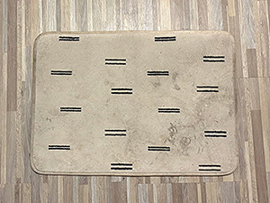
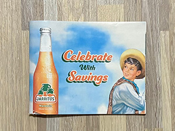
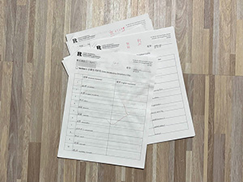
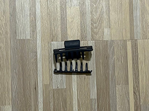
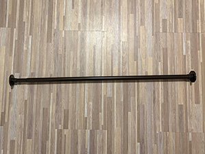
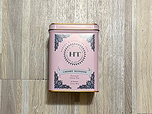
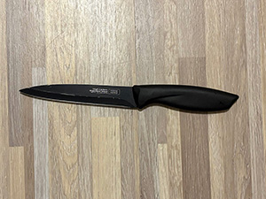
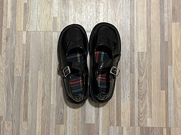

There are three types of people who come across this page: those who think it's an utter waste of time, those who find it interesting, and everyone else with opinions somewhere in between.
“Why bother?”
“It’s just trash.”
“Who cares?”
I do, apparently, and you, dear readers, who have made it far enough into this webpage.
Since moving out and off campus in July, I have been solely responsible for taking out the trash and dragging the trash cans to the front for trash pick-up days. Compared to the trash cans at home, the trash can at my new dwelling is larger. Yet, the trash can filled up shockingly quickly, just between my boyfriend and me. It did not help that gallon trash bags were not as cheap as I had imagined (at least for a typical broke college student).
So, what started as shock and dismay over how often we change out trash bags turned into curiosity: what exactly am I discarding? Thus, this webpage is born: a trash journal, documenting what I am throwing out or getting rid of. And perhaps, for the sake of being a responsible human being on this planet, I can reflect on what I am throwing away and if I absolutely must contribute to the landfills that will likely rival Mount Everest sooner or later. In the process, I can try to reduce trash output, reuse what I can, and maybe save a few extra dollars on trash bags.
It is safe to say that it has been a dangerous week so far. A decent portion of the items I am discarding this week have proven detrimental to my well-being, which I am certain will lead to my untimely demise. Fortunately or unfortunately, my chances of being isekai-ed (a trope in which a character dies because of a dumb reason and gets reincarnated in a different world) from dying in a dumb way are therefore increased. The items on the chopping block this week make me almost miss the terribly mundane and boring trash of the previous weeks (food, wrappers, random papers). Still, as in previous weeks, the items I am discarding hold little sentimental value for me. The categories for this week’s trash are as follows: “No Longer As Useful”, “Who Made This?”, and “Contributions to My Demise”.
This category features the most normal items this week, including an old key ring, a disgusting bathroom mat, a Jarritos’ coupon book, and old Chinese test and quiz papers from last semester. As the category name plainly states, these are items that are no longer needed or useful.
The key ring has been with me for many years since I was allowed my own set of keys in elementary school. After many years of use and accidentally sitting on it in a peculiar way, the key ring has become misshapen, and I got quite the scare the other day when my keys fell out of it (there is a two-hundred-dollar fine for losing them).
The bathroom mat used to be a nice beige color and quite soft and fluffy under your feet when I moved in, but after being used by my housemates and neglected, it is now brown and dirty. I do not wish to touch it with a ten-foot pole.
The Jarritos’ coupon book, a small booklet about two millimeters thick that is a little smaller than my hand, came with a box of their sodas when my boyfriend and I wanted to sample the different flavors, but it's hardly useful because one, I don’t drink soda often, and two, we likely won’t purchase more. Therefore, it has just been taking up space on the desk, and I dislike clutter.
As for the Chinese test papers, aside from boosting my ego by looking at my stellar scores declared in redink and adding weight to my bookbag, they are not relevant to what I am learning now, so they will be thrown into the recycling bin.
These are the items I have been disappointed with in terms of quality over the past week.
First up is my plastic claw clip in a subtle dark blue that I purchased for ten dollars at this Japanese grocery store called Maruichi in Princeton. All I wanted to do was to put my hair up, and when I tried to do so, one side of the claw clip snapped off, unprovoked. I should have just gotten clips from Dollar Tree, Shein, or Temu for a fraction of the price, had I known the claw clip would betray me so.
The curtain rods, metal and black, are not lacking in quality; the issue is their length and the person who selected them. My room faces the street, and the curtain rods are simply too short to extend past the window the right amount. At first glance, it is fine. But if you walk by outside in the evening, especially when the lights are on, you can see into the room far more than I would like.
Now, usually, I don’t complain about food or drinks that I purchased from the grocery store, because I usually cook with the ingredients that I bought, or I know exactly what I am getting. This extends to tea, as I do enjoy trying new things. On a trip to New York, we stopped by the H Mart in Manhattan, and I came across a box of cherry blossom tea. I have enjoyed floral teas so far, such as rose and lavender, and I was quite excited to try cherry blossom tea as well. Unfortunately, it tasted like water, with a faint hint of something I can only describe as sadness and regret. It didn’t help that the resulting tea color slightly resembled the urine of a well-hydrated person. I do not want the tea bags to go to waste, so I will attempt to turn them into cherry blossom syrup, hoping to reuse it for dessert or coffee.
Perhaps “Contributions to My Demise” as a category title may be a bit dramatic, but the two items could have both resulted in serious injuries.
It is said that a dull knife is more dangerous than a sharp one, so the knife I am getting rid of (even though it is technically my roommate’s, not mine) could have given me worse cuts. Thankfully, I am usually pretty careful with knives, so I have not sustained any major injuries. If the initially black blade that had turned silver in some parts wasn’t clear enough, the absence of a cut when I had accidentally stabbed myself with it was the indicator and the catalyst of disappointment that the knife no longer serves its purpose well. Think about it: not only could continued use of the knife result in more potential wounds, but I likely can’t defend myself well with it either, should I need to. Unfortunately, it is time to get a kitchen upgrade.
As for the other item, I plan to throw away a pair of black chunky Mary Jane shoes I purchased from Shein a few months ago because initially, they were affordable and cute enough. I was aware it would be of lower quality, but I believed it would be fine since they were meant to go with very specific outfits I would only wear on occasion. When I did wear the shoes for my Halloween costume, they were comfortable. But I did not anticipate the agony my feet would be in after a few hours, where every step would bruise and burn. There were no physical injuries when I inspected my feet at home. Then, a few days later, these large, dark bruises appeared on my toes that have not gone away since. If I were in danger one day, these shoes would surely be my downfall, causing my own legs and feet to work against me. It is safe to say that the shoes will not be worn again.
Old Key Ring
Bathroom Mat
Jarritos Coupon Book
Chinese Test Papers
Broken Claw Clip
Curtain Rod
Cherry Blossom Tea
Dull Knife
Mary Jane Shoes
| Item | Estimated Weight | Source | Location | Cost | Owend | Mode | Use Frequency |
|---|---|---|---|---|---|---|---|
| Old Key Ring | 1g | Mom | Pocked | <$1 | 10 Years | Trash | Daily |
| Bathroom Mat | 500g | Boyfriend's Mom | Bathroom | $20 | 7 Months | Trash | Accidentally Used Daily |
| Jarritos Coupon Book | 150g | Shoprite Purchase | Desk | Free | 5 Months | Recycled | Not Used |
| Chinese Test Papers | 100g | Professor | Bookbag | Free | 2-4 Months | Recycled | 1-2 Times Per Quiz or Test |
| Claw Clip | 27g | Maruichi | Desk | $10 | 2 Years | Trash | Daily |
| Curtain Rod | 2500g | Previous Tenant | Bedroom | $15 | 7 Months | Abandoned | Not Used |
| Cherry Blossom Tea | 40g | H Mart | Kitchen | $10 | 2 Weeks | Used | Once |
| Dull Knife | 45g | Roommate | Kitchen | $12 | 7 Months | Trash | Several Times a Day |
| Mary Jane Shoes | 700g | Shein | Shoe Rack | $25 | 4 Months | Trash | Once |
Looking back, this week’s trash is definitely the most interesting so far. Documenting what I am throwing out has made it easier to identify these habits. The common trend is that I still haven’t thrown out anything remotely sentimental, not because I am holding onto them, but simply because I value practicality above all else. In the coming weeks, I hope to have less trash to report, experience less sorrow, and find more ways to repurpose things before throwing them in the bin.
Thank you all for reading this far, and see you next week!